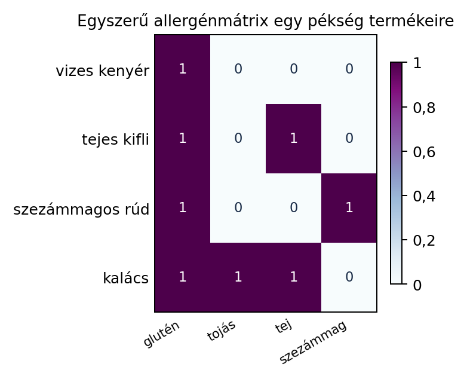

Vásárló lép a péküzletbe, és azt kérdezi: „A kenyérben van szója? A gyermekem allergiás a szójára.” Ugyanezen a napon a pék előtt egy rendelés áll: gluténmentesnek szánt kiflit kell sütnie, de ugyanabban a műhelyben, ahol előzőleg búzalisztes kalácsot gyúrtak. Ha a pék ilyenkor ránéz a termékre, és csak a szemére hagyatkozik, nem fogja látni a tojás-, tej- vagy szezámnyomokat. Az allergénkezelés éppen ezért nem ízlés kérdése, hanem a fogyasztó egészségét védő, dokumentált rendszer.
Az allergén hiba a pékségben gyakran nem a szándékos összetevőből, hanem a keresztszennyeződésből fakad: a keverőtálban maradt diós tészta, a közös lapátokon rászáradt tojásos máz, a légtérben órákig lebegő lisztpor. Ezért ebben az alfejezetben nem egyszerűen az allergének listáját tanuljuk meg, hanem azt is, hogyan kell a pékségben úgy dolgozni, gyártási sorrendet tervezni, tisztítani és jelölni, hogy a nyersanyag, a technológia és a késztermék allergén-információja egymással egyezzen.
Képzeljünk el egy kis pékséget, ahol egy műszakban négy terméket készítenek. Az allergénmátrix megmutatja, melyik termék tartalmazza az adott allergént, és melyik nem. Az alábbi ábra egy ilyen mátrixot szemléltet (1 = tartalmazza, 0 = nem tartalmazza; tanulási példa):

A mátrix első ránézésre csak annyit mond, hogy mindegyik termékben van glutén, a kalácsban tojás és tej is, a szezámmagos rúdban szezámmag. A valódi allergénkezelés azonban ennél többet kérdez: vajon a „tojásmentes” vizes kenyér tésztája nem érintkezett-e tojásos kalácstésztával? A mátrixot ezért mindig együtt kell olvasni a gyártási sorrenddel, a takarítási szabályokkal és a nyersanyag-specifikációkkal.
Definíció. Allergén az az anyag – jellemzően fehérje vagy fehérjetartalmú összetevő –, amely arra érzékeny fogyasztónál immunreakciót, például bőrtünetet, emésztőpanaszt, légúti tünetet vagy súlyos, életveszélyes anafilaxiás reakciót válthat ki. Az élelmiszerjog szerint a fogyasztók tájékoztatása érdekében bizonyos, gyakran allergizáló anyagokat minden élelmiszeren fel kell tüntetni, ha azok a termékben vagy a termékben felhasznált összetevőben jelen vannak.
Definíció. Allergénmátrix a pékség termékeinek és a kezelt allergéneknek olyan táblázatos nyilvántartása, amely terméksoronként (vagy termékenként) megadja, hogy az adott allergén a receptúra szerint tartalmazott összetevőként jelen van-e, illetve hogy a gyártástechnológia miatt keresztszennyeződésként megjelenhet-e (ez utóbbi önkéntes, kockázatértékelésen alapuló jelölés lehet). Az allergénmátrix alapja a receptúra, a nyersanyag-specifikáció és a gyártási folyamat ismerete.
Definíció. Keresztszennyeződés az allergén olyan nem szándékos átkerülése egyik termékről vagy nyersanyagról a másikra, amely a közös eszközök, a légtérben lebegő por, a dolgozó keze, a csomagolóanyag vagy a nem megfelelően tisztított berendezés közvetítésével történik. A keresztszennyeződés akkor is veszélyes, ha az allergén mennyisége kicsi: érzékeny egyéneknél már nyomnyi mennyiség is reakciót válthat ki.
Definíció. Gluténmentes jelölés alatt az olyan élelmiszert értjük, amelynek gluténtartalma a fogyasztó számára értékesített termékben legfeljebb 20 mg/kg (azaz 20 ppm). A nagyon alacsony gluténtartalmú élelmiszer gluténtartalma legfeljebb 100 mg/kg. E határértékek uniós rendeletből származnak, és a „gluténmentes” állítás csak a feltételek teljesülése esetén használható (ellenőrizendő: 828/2014/EU rendelet hatályos szövege és a végtermékre vonatkozó pontos határértékek).
Definíció. „Nyomokban tartalmazhat” jelölés az élelmiszer-vállalkozó által önként alkalmazott figyelmeztetés arra, hogy a termék a gondos gyártási gyakorlat ellenére keresztszennyeződéssel tartalmazhat egy adott allergént. Az EU élelmiszerjogban a „nyomokban” feliratnak nincs egységes, minden tagállamra kötelező határértéke; a közlést a tényleges kockázatértékeléshez kell kötni, és nem helyettesítheti a higiéniai vagy elkülönítési intézkedéseket (ellenőrizendő: 1169/2011/EU rendelet és a vonatkozó hatósági iránymutatások).
Az uniós élelmiszerjog szerint az alábbi anyagok vagy termékcsoportok tartoznak a jelölési kötelezettség alá tartozó fő allergének közé. A felsorolás az 1169/2011/EU rendelet II. mellékletén alapul (ellenőrizendő: a melléklet hatályos szövege, a pontos megnevezések és a kén-dioxid/szulfit koncentrációküszöb).
| Allergén | Példák sütőipari megjelenésre |
|---|---|
| Glutént tartalmazó gabonafélék (búza, rozs, árpa, zab, tönköly, kamut vagy hibridjeik) | búzaliszt, rozsliszt, búzakorpa, zabpehely, durumliszt, süteményliszt |
| Tojás és tojástermékek | egész tojás, tojásfehérjepor, tojássárgája, tojásos kenés |
| Tej és tejtermékek (tejcukorral együtt) | tej, tejpor, vaj, tejszín, sajtpor, savópor, tejfehérje |
| Diófélék (mandula, mogyoró, dió, kesudió, pekándió, brazil dió, pisztácia, makadámdió, más néven queenslandi dió) | mandulaliszt, dióreszelék, mogyorókrém, pisztáciapaszták |
| Földimogyoró | földimogyoró-darab, mogyoróvaj, földimogyoró-liszt, földimogyoró-olaj |
| Szójabab | szójaliszt, szójalecitin, szójafehérje, szójaitalpor; a teljesen finomított szójaolaj és -zsír kivétel (ellenőrizendő: 1169/2011/EU II. melléklet 6. pont) |
| Szezámmag | szezámmag, szezámolaj, tahini (szezámpaszta) |
| Zeller | zellermag, zellerlevél, zellersó, szárított zeller |
| Mustár | mustárliszt, mustármag, mustárpaszta |
| Csillagfürt (lupin) | csillagfürtliszt, lupinfehérje, csillagfürtőrlemény |
| Rákfélék | garnélapor, rákpaszta (ritka, de pl. sós kekszekben, töltelékben előfordulhat) |
| Hal | szardellapaszta, halszószpor, halkivonat (pl. egyes fűszerkeverékekben) |
| Puhatestűek | kagylókivonat, tintahalpor (ritka, de fűszerkeverékekben előfordulhat) |
| Kén-dioxid és szulfitok (10 mg/kg vagy 10 mg/l felett, SO₂-ként kifejezve) | aszalt gyümölcsök, kandírozott gyümölcsök, egyes gyümölcskészítmények, szulfitált keményítők |
A pék szempontjából a leggyakoribb allergének a glutén, tojás, tej, szezámmag, diófélék, földimogyoró, szója és csillagfürt. A csillagfürtliszt egyre gyakrabban jelenik meg fehérjedús, gluténmentes kenyérliszt-keverékekben, ezért a péknek a gluténmentes termékeknél is külön figyelnie kell erre az allergénre.
Előírás. Az 1169/2011/EU rendelet szerint az allergén összetevőket az összetevők listájában egyértelműen meg kell jelölni, és a betűtípus, stílus vagy háttérszín révén ki kell emelni úgy, hogy azok vizuálisan is elkülönüljenek a többi összetevőtől (ellenőrizendő: 1169/2011/EU rendelet 9. cikk (1) bekezdés c) pont és 21. cikk; a kiemelés pontos előírása). Ha az élelmiszernek nincs összetevőlistája (például friss, nem csomagolt kenyérnél), akkor az allergén jelenlétét a „tartalmaz …” kifejezéssel kell feltüntetni.
Előírás. A nem előre csomagolt élelmiszereknél – például a péküzletben pultból értékesített kenyérnél, kiflinél, pogácsánál – az allergén-információt a fogyasztó számára hozzáférhetővé kell tenni. Ennek módja tagállami szabályozás alá tartozik. Magyarországon a vendéglátó és vendéglátó-ipari létesítményekre, valamint a nem előrecsomagolt élelmiszerekre vonatkozó allergéntájékoztatás szabályait külön rendelet tartalmazza (ellenőrizendő: a hatályos magyar rendelet száma és az alkalmazási köre; gyakorlatban a péküzletekben írásban vagy szóban kell tájékoztatni, de a szóbeli tájékoztatást tudni kell igazolni).
A pék tehát nem teheti meg, hogy az eladópultban csak annyit mond: „minden friss, mai áru”. A pultnál lévő írásos allergénlap, a csomagolt terméken lévő címke és a szóbeli tájékoztatás egymással összhangban kell álljon. Ha egy terméken nincs összetevőlista, a „tartalmaz glutént, tojást, tejet, szezámmagot” feliratnak jól láthatónak kell lennie.
Az allergénmátrix elkészítése több lépésből álló, dokumentált ellenőrzési folyamat. A lépések során a pék nem emlékezetből dolgozik, hanem a receptúrából, a nyersanyagok specifikációjából és a gyártási folyamat leírásából.
Eljárás – allergénmátrix készítése (számozott lépések).
Kidolgozott példa – allergénmátrix készítése.
Egy pékség három terméket készít: vizes zsemlét, tejes kiflit és diós kalácsot. A receptúrák alapján a következő allergén-információk állnak rendelkezésre:
Az allergénmátrix a következőképpen néz ki (csak a legfontosabb allergén oszlopokkal):
| Termék | Glutén | Tojás | Tej | Diófélék |
|---|---|---|---|---|
| Vizes zsemle | van | nincs | nincs | nincs |
| Tejes kifli | van | nincs | van | nincs |
| Diós kalács | van | van | van | van |
A mátrixból látszik, hogy a vizes zsemle elvileg tojás-, tej- és diómentes. A pék azonban megnézi a gyártási körülményeket: ha a zsemléket ugyanazokkal az eszközökkel formázzák, mint a diós kalácsot, és a tisztítás nem teljes, a zsemle dióval keresztszennyeződhet. Ezt a mátrixban külön meg kell jeleníteni: „nyomokban dióféléket tartalmazhat”, ha a kockázatértékelés ezt alátámasztja.
Számítás. Ha a pékségben naponta 12-féle terméket készítenek, és az allergénmátrixot 8 releváns allergénre töltik fel, akkor 12 × 8 = 96 cellát kell ellenőrizni minden termékre és allergénre. Ez nem nagy szám, de a hiba lehetőségét jól mutatja: ha a mátrix nem frissül, egyetlen cella tévesen „nincs” értéket mutathat, pedig a receptúrába új beszállítótól származó szójalecitin került. A péknek ezért a nyersanyag-specifikációk változását is nyomon kell követnie.
A keresztszennyeződés megelőzése a pékségben négy fő területen történik: gyártási sorrend, elkülönítés, tisztítás, dolgozói higiénia.
HACCP. Az allergén-elkülönítés (különösen „mentes” állítású termék gyártásánál) a könyv tanulási rendszerében CCP; a többi allergénkezelési intézkedés (tárolás, sorrend, oktatás) előfeltételi program (PRP) vagy műveleti előfeltételi program (oPRP). Hogy egy lépés CCP vagy oPRP, azt a pékség HACCP-terve a döntési fával dönti el (ellenőrizendő). Egyes lépések – például a „mentes” állítású termék csomagolásánál a címke és a termék egyezésének ellenőrzése – kezelhetők CCP-ként. A határérték ilyenkor nem hőmérséklet, hanem például: „a csomagolóanyag allergénjelölése pontosan egyezik a mátrixszal” (ellenőrizendő: a pékség HACCP-terve, az allergén CCP-k kijelölése és a monitoring módja).
Gyártási sorrend. Ha a műszakban készül az adott allergént nem tartalmazó és azt tartalmazó termék is, akkor először az adott allergént nem tartalmazó (vagy kevesebb allergént tartalmazó) terméket kell gyártani, és utoljára a legtöbb allergént tartalmazó, legerősebben szennyező terméket. Például:
Ez a sorrend csökkenti annak esélyét, hogy a dió vagy a tojás a zsemlébe kerüljön. A sorrendet írásban kell rögzíteni, és a műszak elején ellenőrizni kell.
Lisztpor. A búzaliszt pora hosszú ideig a levegőben maradhat, és felületekre, eszközökre, szellőzőkre ülepedhet. Ha a pékség gluténmentes terméket készít, a búzalisztpor a legnagyobb keresztszennyező. A lisztpor ellen zárt rendszerű dagasztás, elszívás, gyakori takarítás és a gluténmentes nyersanyagok elkülönített tárolása szükséges. A lisztpor nem látható allergén: attól, hogy az asztalt letörölték, még maradhat rajta gluténtartalmú por. A hatékony eltávolításhoz nedves takarítás vagy porszívó és utána fertőtlenítő törlés szükséges.
Közös eszközök. A dagasztótál, a keverőlapát, a szaggató, a nyújtófa, a mérleg, a sütőlemez, a kelesztőszakajtó és a csomagolóasztal mind hordozhat allergént. A „mentes” állítású termékhez külön, színkóddal jelölt eszközöket kell biztosítani, vagy a közös eszközöket az érintett allergén eltávolítására alkalmas, validált tisztítási eljárás után szabad használni. A kék keverőtál például a gluténmentes terméké, a piros a hagyományos búzás terméké (a színkiosztás üzemi szabály, nem jogszabályi előírás; a pékség allergénterve rögzíti). A színkódolás önmagában nem elég, ha a dolgozók nem tartják be.
Tisztítás. Az allergén fehérjék eltávolításához nem elegendő a száraz seprés, mert a port felkavarja. A helyes tisztítási sorrend: mechanikai eltávolítás (tészta- és morzsamaradék lekaparása), porszívózás vagy nedves feltörlés, majd a felületre és a termékre engedélyezett tisztító- és fertőtlenítőszeres kezelés. A „mentes” állítású termék gyártása előtt a berendezések szétszerelhető részeit szét kell szerelni, és minden holtteret ellenőrizni kell. A tisztítás hatékonyságát időszakosan allergénspecifikus (pl. glutén-, tojás-, tejfehérje-) gyorsteszttel lehet ellenőrizni; az ATP-teszt csak a tisztaság általános mutatója, allergént nem mutat ki (ellenőrizendő: az adott teszt érvényessége és a pékség takarítási validálási terve).
Elkülönítés. A nyersanyagok tárolásánál az allergént tartalmazó és az azt nem tartalmazó lisztet, magvakat, tojásport, tejport, diótermékeket egymástól fizikailag elkülönítve, zárt edényben vagy külön polcon kell tartani. A gluténmentes lisztet nem szabad a búzaliszt mellett nyitott zsákban tárolni. A mérőkanalat, merőedényt soha ne használjuk át közvetlenül egyik alapanyagból a másikba.
A négy terület egy kis pékműhely alaprajzán így áll össze: a lisztpor forrása a zsákürítő és a dagasztó (1), ezért a „mentes” munkaasztal a portól a lehető legtávolabb, saját, színkódolt eszközkészlettel áll (2); az allergén nyersanyagok zárt, címkézett tárolókban, külön polcon vannak (3); a zónák között kézmosó és köténycsere-pont van (4), a közös gépeket pedig a termékváltások között a tisztítási pontban tisztítják (5). Az alaprajz alatt a műszak gyártási sorrendje látható.
Ellenőrzési pont: a sorrend a legkevesebb allergént tartalmazó terméktől halad a legtöbbet tartalmazóig, és a végén teljes tisztítás következik; a fordított sorrend a legveszélyesebb hiba, mert a dió és a tojás a gépen, a lisztporban és az eszközökön keresztül a zsemlébe kerülhet, amelynek címkéje ezeket nem tünteti fel. A HTML-kiadásban a rétegek (porfelhő, eszközszínek, tárolás, sorrend) ki-be kapcsolhatók, és a megfordított sorrend réteg megmutatja ezt a hibát.
Ha a pékség gluténmentes terméket akar készíteni és jelölni, a fenti keresztszennyeződés-megelőzésen túl további feltételeknek kell megfelelnie. A „gluténmentes” felirat nem azt jelenti, hogy „kevés glutén van benne”, hanem hogy a késztermék gluténtartalma a meghatározott határérték alatt van, és a gyártás során a gluténnel való keresztszennyeződést kizárták vagy ellenőrzött szint alatt tartották.
Előírás. A gluténmentes és a nagyon alacsony gluténtartalmú élelmiszerekre vonatkozó követelményeket külön uniós rendelet állapítja meg; a határértékeket fentebb már megadtuk (ellenőrizendő: 828/2014/EU rendelet; a „gluténmentes” és „nagyon alacsony gluténtartalmú” fogalommeghatározások és a mérési módszerek pontos előírása). A pék csak akkor használhatja ezeket az állításokat, ha a termék megfelel a határértéknek, és ezt a gyártási folyamat ellenőrzésével igazolni tudja. A gluténmentes termékekhez gluténmentes nyersanyagokat (pl. gluténmentes zabpehely, rizsliszt, kukoricaliszt, hajdinaliszt, köles, cirok, tápiókakeményítő; csillagfürtliszt csak jelölt allergénként) kell használni, és a búzaliszttel való érintkezést ki kell zárni.
A „nyomokban tartalmazhat” jelölés nem alkalmazható automatikusan minden termékre. Ha a pék azért írja rá a „nyomokban dióféléket tartalmazhat” mondatot, mert a műhelyben diót is feldolgoznak, de a gyártási sorrendet és a takarítást nem szabályozta, az a jelölés nem védi meg a fogyasztót, és hatósági ellenőrzésen is kifogásolható lehet. A „nyomokban” közlésnek a tényleges kockázatértékelésen kell alapulnia, és a termékre jellemző, valós keresztszennyeződési lehetőséget kell jeleznie. Ha a keresztszennyeződés a jó higiéniai gyakorlat betartásával teljesen kizárható, a „nyomokban” feliratot el lehet hagyni. „-mentes” állítást (pl. „tojásmentes”) csak akkor szabad használni, ha a termék a kockázatértékelés és rendszeres analitikai vizsgálat alapján igazoltan nem tartalmazza az allergént (ellenőrizendő: 1169/2011/EU 36. cikk, NÉBIH útmutató).
HACCP. Az allergénkezelés az élelmiszer-biztonsági rendszer része. A péknek a következő lépésekben kell az allergéneket veszélyként azonosítania és szabályoznia:
Határérték példa (tanulási példa). A pékség HACCP-tervében allergén CCP-hez határérték lehet: „a gluténmentes termék csomagolásán a gluténmentes jelölés szerepel, és a termék nem tartalmaz búzalisztet a receptúrában; a csomagolótérben az utolsó 4 órában búzalisztes terméket nem csomagoltak” (ellenőrizendő: a pékség HACCP-terve és a hatósági útmutató; a példa csak a szemléletet mutatja).
Eljárás. Az alábbi számozott lépések nem ételreceptet, hanem a pékségben használható allergénkezelési eljárást adnak meg. Minden lépés célja és ellenőrzési pontja az allergénhiba megelőzése.
Példa. Egy pékség egyik napra a következő termékeket tervezi: reggel 6 órától vizes zsemlét, 8 órától tejes kiflit, 10 órától diós kalácsot gyártanak. Az allergénszempontú gyártási sorrend: vizes zsemle → tejes kifli → diós kalács. A vizes zsemle készítésekor sem tojást, sem tejet, sem diót nem használnak, ezek zárt tárolóban vannak. A tejes kiflihez már tejet használnak, de tojást és diót még nem. A diós kalács készítésekor már minden allergén jelen van. Ha a sorrendet valaki megfordítja, és előbb diós kalácsot gyúr, akkor a dagasztógépben, a mérlegen, a vágóasztalon, a dolgozó kötényén és a levegőben is lehet diónyom, amely a későbbi zsemlébe is átkerülhet. A diós kalács után ezért teljes takarítás nélkül nem készíthető „mentes” állítású termék.
A pékségben a diós kalács után a következő műszakban csak másnap készül vizes zsemle. Ekkor a takarítási napló igazolja, hogy a diós tészta maradékait eltávolították, a gépet szétszerelték, a lapátokat elmosták, a munkafelületet fertőtlenítették, és a dolgozók tiszta munkaruhát vettek fel. Ha ez megtörtént, a vizes zsemle allergénsora tojást, tejet és diót nem tüntet fel. „Tojás-, tej- vagy diómentes” állítás ezen túl csak validált tisztítás, kockázatértékelés és rendszeres analitikai igazolás mellett használható (lásd a „Gluténmentes és »mentes« állítások feltételei” szakaszt); vegyes üzemben ezt általában nem vállaljuk.
Valós eset. Egy kis pékségben a pék szezámmagos rudat és natúr kiflit készített ugyanazon a gyártósoron. A natúr kiflit a pék „szezámmagmentes” felirattal árulta, mert a receptúrában nem volt szezám. Egy szezámmagra allergiás vásárló vásárolt a natúr kifliből, és enyhe allergiás tüneteket tapasztalt. A panaszkivizsgálás során kiderült, hogy a szezámmagos rudak formázásakor a szezámmag az asztalra, a sütőlemezre és a mérlegre tapadt, a takarítás csak száraz sepréssel történt, és a natúr kifli a közös formázóasztalon készült. A gyártási sorrendet sem rögzítették, és a dolgozók sem tudták, hogy a szezám allergén. A tanulság: a „-mentes” állítás csak akkor igaz, ha azt a gyártási folyamat, a tisztítás és az elkülönítés is alátámasztja. Általános „allergénmentes” termék nincs; az állítás mindig egy adott allergénre vonatkozik.
Az allergénkezelés minőségi mutatói a következők:
Hiba: A pék csak a receptúrát nézi, és nem ellenőrzi a nyersanyag-specifikációt. Ok: feltételezi, hogy a „sima liszt” mindig ugyanaz, és a beszállító nem változtatott. Következmény: a nyersanyagban rejtett, jelöletlen allergén (pl. szója a lisztjavítóban) kerül a termékbe. Megelőzés: minden szállítmánynál ellenőrizni kell az allergén-információt, és a mátrixot frissíteni.
Hiba: Az allergént nem tartalmazó és az allergént tartalmazó termékeket ugyanazzal a lapáttal, tállal, sütőlemezzel készítik, tisztítás nélkül. Ok: a dolgozók nem látják az allergént, ezért „tiszta”-nak hiszik az eszközt. Következmény: keresztszennyeződés, fogyasztói panasz, hatósági kifogás. Megelőzés: színkód, elkülönített eszközök, validált tisztítás, oktatás.
Hiba: A „nyomokban tartalmazhat” feliratot minden termékre ráírják, fajtától függetlenül. Ok: a pék így próbálja „biztosra menni”. Következmény: a jelölés elveszti hitelét, a fogyasztó nem kap valódi tájékoztatást, és valóban az adott allergént nem tartalmazó terméket sem tud vásárolni. Megelőzés: a „nyomokban” csak kockázatértékelés alapján, a tényleges keresztszennyeződési lehetőségre szóljon.
Hiba: A pultban dolgozó eladó nem tudja, hogy a kalácsban tojás van, és azt mondja: „nincs benne semmi allergén”. Ok: nincs írásos allergénlap a pultban, vagy a dolgozót nem oktatták. Következmény: az allergiás fogyasztó rossz terméket választ. Megelőzés: a pultban jól látható allergénmátrix, a dolgozók rendszeres oktatása, próbakérdezés.
Hiba: A gluténmentes terméket búzalisztes üzemben, ugyanabban a kamrában tárolt alapanyagokból készítik, porelszívás nélkül. Ok: nincs külön gluténmentes gyártási blokk vagy időbeli elkülönítés. Következmény: a termék gluténtartalma a határérték fölé nőhet. Megelőzés: külön tároló, külön eszközök, zárt dagasztás, a levegő portartalmának csökkentése, rendszeres analitikai ellenőrzés.
1. feladat (A)
Sorold fel a 14 főallergén közül azokat, amelyek a leggyakrabban
fordulnak elő egy hagyományos péküzemben, és mondd meg, melyik
termékcsoportban jelennek meg jellemzően.
2. feladat (A)
Egy pékség vizes zsemlét készít búzalisztből, vízből, élesztőből, sóból
és árpamalátából. Készítsd el a termék allergénsorát a 14 főallergén
alapján, feltételezve, hogy a maláta glutént tartalmaz
(ellenőrizendő: a maláta jogi besorolása).
3. feladat (B)
Egy pékség négy terméket gyárt: (1) vizes kenyér (liszt, víz, élesztő,
só), (2) tejes kifli (liszt, tej, vaj, cukor, élesztő, só), (3) tojásos
kalács (liszt, tojás, tej, vaj, cukor, élesztő), (4) diós kalács (a
tojásos kalács receptje dióval). Készíts allergénmátrixot a glutén,
tojás, tej, diófélék oszlopokra. Jelöld, hogy a mátrix szerint melyik
terméknél kell „nyomokban” kockázatot vizsgálni, ha ugyanazon a
gyártósoron készülnek, és a sorrend nincs szabályozva.
4. feladat (B)
Egy műszakban három terméket készítenek: (a) natúr kifli (glutén), (b)
sajtos kifli (glutén, tej), (c) szezámmagos kifli (glutén, szezámmag).
Tervezd meg a gyártási sorrendet allergénszempontból, és indokold, miért
ez a helyes. Milyen takarítási lépést kell végrehajtani a sajtos és a
natúr kifli között, ha a natúr kiflit „tejmentes” jelöléssel akarják
eladni?
5. feladat (C)
Egy pékségben a pék a diós kalács után közvetlenül, takarítás nélkül
vizes zsemlét gyúrt ugyanabban a dagasztógépben. A vizes zsemlét
„diómentes” felirattal csomagolta. Elemezd a hibát: mi a tünet (mi a
fogyasztói kockázat), mi az ok, mit kellett volna tenni, és hogyan lehet
megelőzni?
6. feladat (D)
Egy pékség allergénmátrixát kell ellenőrizned. Adott a következő
táblázat (1 = tartalmaz, 0 = nem tartalmaz):
| Termék | Glutén | Tojás | Tej | Szezámmag |
|---|---|---|---|---|
| Vizes zsemle | 1 | 0 | 0 | 0 |
| Tejes kifli | 1 | 0 | 1 | 0 |
| Kalács | 1 | 1 | 1 | 0 |
A gyártás során a tejes kifli és a kalács ugyanabban a dagasztógépben készül, a kalácsot a tejes kifli után gyártják, és a gépet nem tisztítják; a következő műszak elején ugyanabban a dagasztóban tisztítás nélkül vizes zsemle és tejes kifli készül. Melyik cellában lehet hiba? Milyen helyesbítő intézkedést írnál elő a mátrixban és a gyártásban?
Önellenőrzés – válaszok
Feladatok megoldásai
1. feladat (A)
A leggyakoribb allergének a péküzemben: gluténtartalmú gabonafélék
(búza, rozs, árpa, zab, tönköly, kamut), tojás, tej, diófélék,
földimogyoró, szójabab, szezámmag, csillagfürt. A glutén minden
búzalisztes, rozslisztes termékben jelen van. A tojás a dúsított
tésztákban (kalács, briós), a tej a tejes tésztákban, a diófélék a diós
kalácsban, a földimogyoró és a szója a készliszt-keverékekben vagy
sütőjavítókban, a szezámmag a szezámmagos termékeken, a csillagfürt
gluténmentes kenyérliszt-keverékekben.
2. feladat (A)
Allergénsor: glutént tartalmazó gabonafélék (búza, árpa).
Összetevőlistában kiemelve: búzaliszt, víz, élesztő,
só, árpamaláta. Más főallergén nincs a felsorolt
anyagokban.
3. feladat (B)
Az allergénmátrix:
| Termék | Glutén | Tojás | Tej | Diófélék |
|---|---|---|---|---|
| Vizes kenyér | 1 | 0 | 0 | 0 |
| Tejes kifli | 1 | 0 | 1 | 0 |
| Tojásos kalács | 1 | 1 | 1 | 0 |
| Diós kalács | 1 | 1 | 1 | 1 |
Ha ugyanazon a gyártósoron készülnek, és a sorrend nincs szabályozva, akkor a diós kalács után a többi terméknél fennáll a dióval való keresztszennyeződés. Ezért a „diómentes” vagy „dió nélkül készült” állításnál a mátrixban külön kockázatot kell jelölni: pl. „nyomokban dióféléket tartalmazhat” minden olyan terméknél, amelyet a diós kaláccsal közös eszközökön gyártanak, ha a tisztítás nem validált.
4. feladat (B)
A helyes sorrend: (a) natúr kifli → (b) sajtos kifli → (c) szezámmagos
kifli. A natúr kifli csak glutént tartalmaz, tehát tej- és szezámmentes,
ezért a legelején kell készíteni. A sajtos kifli tejet tartalmaz, a
szezámmagos szezámmagot. Mivel a natúr kifli készül elsőként, előtte
csak a szokásos (előző napi) tisztítás kell. Ha a sajtos után újra natúr
kiflit gyártanának „tejmentes” jelöléssel, előtte a gépet és az
eszközöket allergéntisztítással (szétszerelés, mosás, ellenőrzés) kell
megtisztítani.
5. feladat (C)
Tünet: a „diómentes” vizes zsemlében diónyom lehet, ami dióallergiás
fogyasztónál allergiás reakciót okozhat. Ok: a diós kalács után a
dagasztógépet és az eszközöket nem tisztították, ezért a diómaradék a
zsemlébe került. Helyes eljárás: a diós kalács után teljes takarítást
kellett volna végezni, a dagasztógépet szétszerelni, a dióval érintkező
eszközöket elkülönítve elmosni, a munkafelületet fertőtleníteni, és a
dolgozók kezét, kötényét cserélni. Megelőzés: gyártási sorrend (diós
kalács utoljára), a takarítási napló vezetése, a „mentes” állítású
termékekhez külön eszközök, a dolgozók oktatása.
6. feladat (D)
A megadott sorrend (tejes kifli → kalács) helyes, a hiba abban van, hogy
a kalács után a gépet nem tisztítják: a következő műszak első terméke
(vizes zsemle, tejes kifli) tojás- és tejnyomot kaphat. Ezért vagy a
kalács utáni teljes tisztítást kell előírni és dokumentálni, vagy a
vizes zsemle és a tejes kifli tojás-oszlopában „nyomokban” kockázatot
jelölni. A mátrixot a tényleges gyártási sorrend szerint kell
frissíteni, és a tojásmentes jelölés csak igazolt tisztítás mellett
használható.
Az allergénkezelés a pékségben a fogyasztó egészségvédelmét szolgáló, dokumentált rendszer. A 14 főallergén közül sütőipari szempontból kiemelt a glutén, a tojás, a tej, a diófélék, a szezámmag, a szója és a csillagfürt. Az allergénmátrix a termékek és allergének táblázatos nyilvántartása, alapja a receptúra, a nyersanyag-specifikáció és a gyártási folyamat. A keresztszennyeződést a helyes gyártási sorrenddel (előbb az adott allergént nem tartalmazó vagy kevesebb allergént tartalmazó termék), az eszközök elkülönítésével, a validált tisztítással és a dolgozói higiéniával kell megelőzni. A gluténmentes jelölés csak a meghatározott határérték (≤20 mg/kg) betartásával használható; a „nyomokban tartalmazhat” felirat önkéntes, kockázatértékelésen alapuló figyelmeztetés. A csomagolásnál az allergéncímke és a termék egyezésének ellenőrzése gyakran CCP. Továbbvitt eredmény. Az itt bemutatott allergénmátrix és keresztszennyeződés-megelőzési szabályok minden későbbi technológiai lap allergénsorának alapját adják; a fogalmakat felhasználjuk a minőségbiztosítás, a jelölés, a készlisztek, a segédanyagok, a töltelékek, a diétás termékek és a fogyasztóvédelem alfejezeteiben.